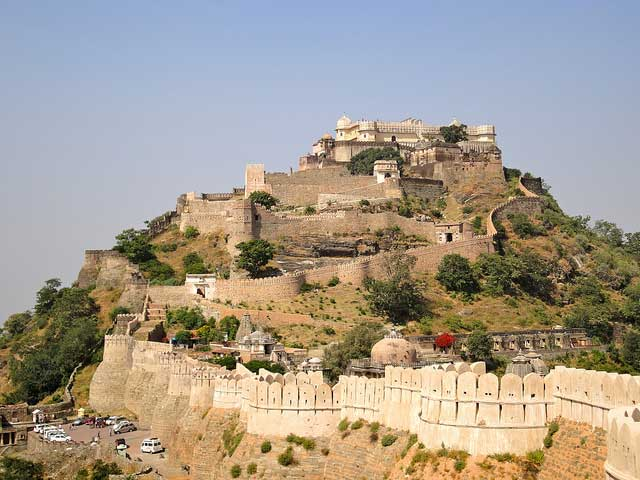
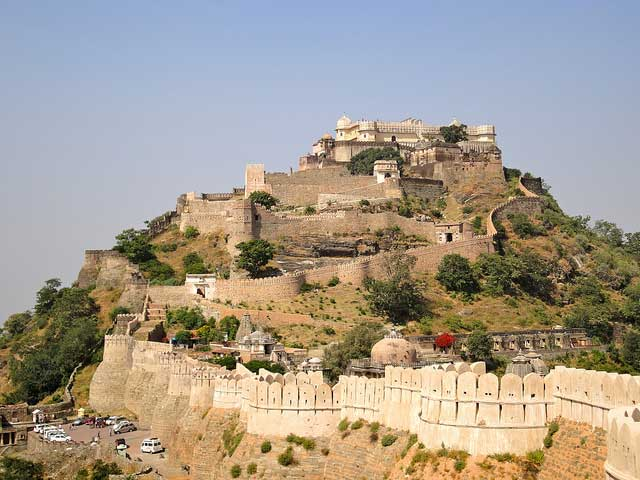
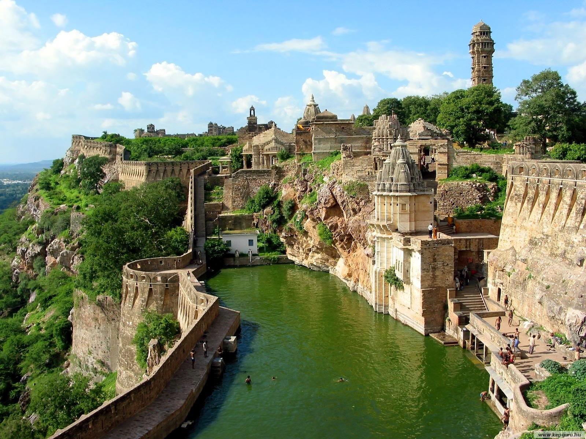
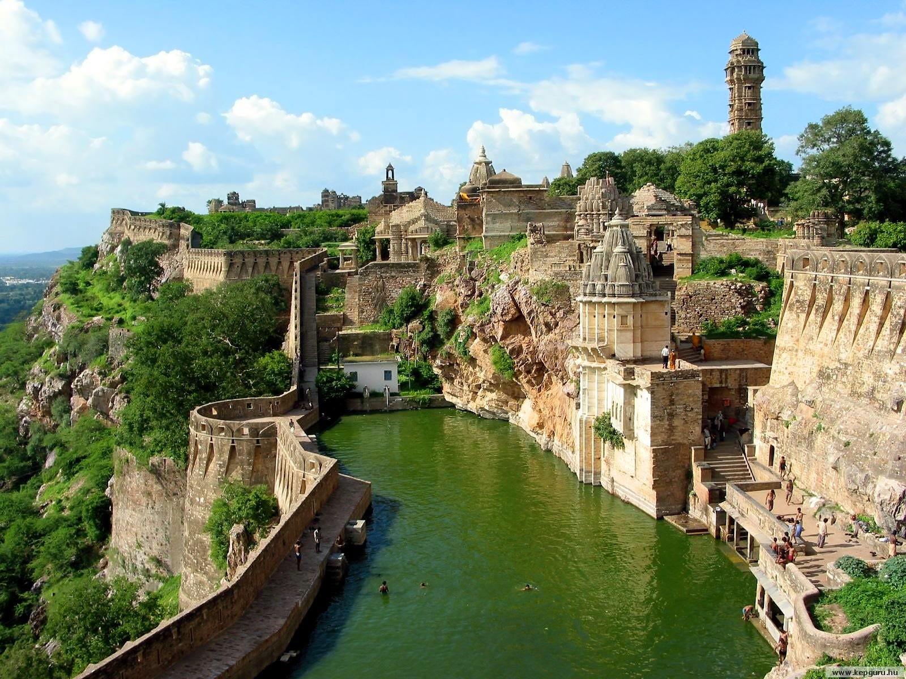
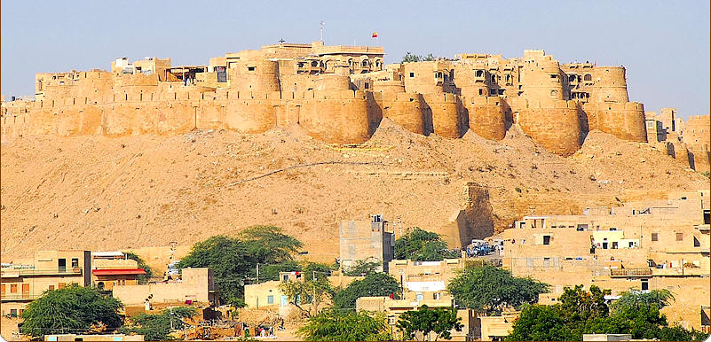
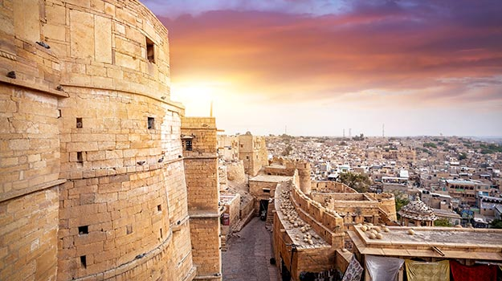
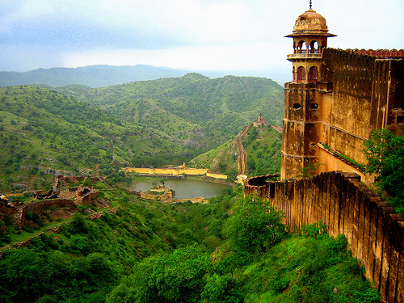
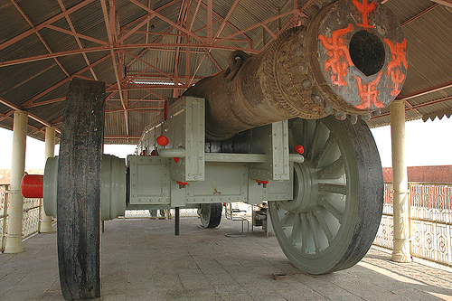

1.KUMBHALGARH(RAJSAMAND)
 
Kumbhalgarh Fort is a Mewar fortress on the westerly range of Aravalli Hills, in the Rajsamand District of Rajasthan state in western India. It is a World Heritage Site included in Hill Forts of Rajasthan. Built during the course of the 15th century by Rana Kumbha and enlarged through the 19th century, Kumbhalgarh is also the birthplace of Maharana Pratap, the great king and warrior of Mewar. Occupied until the late 19th century, the fort is now open to the public and is spectacularly lit for a few minutes each evening. Kumbalgarh is situated 82 km northwest of Udaipur by road. It is the most important fort in Mewar after Chittaurgarh. In 2013, at the 37th session of the World Heritage Committee held in Phnom Penh, Cambodia, Kumbhalgarh Fort, along with five other forts of Rajasthan, was declared a UNESCO World Heritage Site under the group Hill Forts of Rajasthan. The fort is the second largest wall in the world after the Great Wall of China and the second largest fort in Rajasthan after Chittorgarh Fort.
2.CHITTORGARH FORT
 
  Jaisalmer Fort is one of the largest fortifications in the world. It is situated in the city of Jaisalmer, in the Indian state of Rajasthan. It is a World Heritage Site. It was built in 1156 AD by the Rajput ruler Rawal Jaisal, from whom it derives its name. (Rawal Jaisal's son was Shalivahan II; Manj and Bhati Rajputs are descended from him.) The fort stands amidst the sandy expanse of the great Thar Desert, on Trikuta Hill, and has been the scene of many battles. Its massive yellow sandstone walls are a tawny lion colour during the day, fading to honey-gold as the sun sets, thereby camouflaging the fort in the yellow desert. For this reason, it is also known as the Sonar Quila or Golden Fort. The fort is located in the very heart of the city, and is one of the most notable monuments in the locality.In 2013, at the 37th session of the World Heritage Committee held in Phnom Penh, Cambodia, Jaisalmer Fort, along with 5 other forts of Rajasthan, was declared a UNESCO World Heritage Site under the group Hill Forts of Rajasthan.
  Jaigarh Fort is situated on the promontory called the Cheel ka Teela (Hill of Eagles) of the Aravalli range it overlooks the Amber Fort and the Maota Lake, near Amber in Jaipur, Rajasthan, India. The fort was built by Jai Singh II in 1726 to protect the Amber Fort and its palace complex and was named after him. The fort, rugged and similar in structural design to the Amber Fort, is also known as Victory Fort. It has a length of 3 kilometres (1.9 mi) along the north–south direction and a width of 1 kilometre (0.62 mi). The fort features a cannon named "Jaivana", which was manufactured in the fort precincts and was then the world's largest cannon on wheels.The palace complex (Laxmi Vilas, Lalit Mandir, Vilas Mandir and Aram Mandir) located ), an armoury and a museum.Jaigarh Fort and Amber Fort are connected by subterranean passages and considered as one complex.

 Ajmer Fort is located in Ajmer, a town with an area of 4 square kilometres (1.5 sq mi) located 11 kilometres
(6.8 mi) from Jaipur, Rajasthan state, India. Located high on a hill, it is the principal tourist attraction
in the Jaipur area. The town of Amer was originally built by Meenas, and later it was ruled by Raja Man Singh
I (December 21, 1550 – July 6, 1614).Amer Fort is known for its artistic Hindu style elements. With its large
ramparts and series of gates and cobbled paths, the fort overlooks Maota Lake. It is the main source of water
for the Ajmer palace.At the 37th session of the World Heritage Committee held in Phnom Penh, Cambodia, in 2013, Ajmer Fort, along with
five other forts of Rajasthan, was declared a UNESCO World Heritage Site as part of the group Hill Forts of
Rajasthan.
Ajmer Fort is located in Ajmer, a town with an area of 4 square kilometres (1.5 sq mi) located 11 kilometres
(6.8 mi) from Jaipur, Rajasthan state, India. Located high on a hill, it is the principal tourist attraction
in the Jaipur area. The town of Amer was originally built by Meenas, and later it was ruled by Raja Man Singh
I (December 21, 1550 – July 6, 1614).Amer Fort is known for its artistic Hindu style elements. With its large
ramparts and series of gates and cobbled paths, the fort overlooks Maota Lake. It is the main source of water
for the Ajmer palace.At the 37th session of the World Heritage Committee held in Phnom Penh, Cambodia, in 2013, Ajmer Fort, along with
five other forts of Rajasthan, was declared a UNESCO World Heritage Site as part of the group Hill Forts of
Rajasthan.©Copyright-2018 Hamara Rajasthan.com (All Rights Reserved)